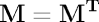

Introduction
This tutorial demonstrates the usage of the LinAlg package with its
probably most frequent application, the inversion of a matrix.
The Inversion Problem
The inverse of a square matrix  is, if it exists,
the unique matrix
is, if it exists,
the unique matrix  that fulfills
that fulfills  where I is the unit matrix. In Shark, matrices are represented as
Arrays.
However, most programming languages including C++ do not support
computations involving vectors and matrices. Further, matrix
inversion is a non-trivial numerically challenging process,
especially for matrices "close" to non-invertible matrices
with low rank.
Therefore the LinAlg packages offers powerful and efficient methods
for matrix inversion.
where I is the unit matrix. In Shark, matrices are represented as
Arrays.
However, most programming languages including C++ do not support
computations involving vectors and matrices. Further, matrix
inversion is a non-trivial numerically challenging process,
especially for matrices "close" to non-invertible matrices
with low rank.
Therefore the LinAlg packages offers powerful and efficient methods
for matrix inversion.
For non-square matrices  inversion does not make
sense. Instead, we are usually interested in the
Moore-Penrose
pseudoinverse, as the pseudoinverse can also be computed
for non-invertible square matrices. Therefore it is always
safe to compute the pseudoinverse instead of the inverse. In
LinAlg, this is done with the function
g_inverse or with the frontend invert.
Alternatively, g_inverseCholesky can be used, which implements the algorithm described in:
inversion does not make
sense. Instead, we are usually interested in the
Moore-Penrose
pseudoinverse, as the pseudoinverse can also be computed
for non-invertible square matrices. Therefore it is always
safe to compute the pseudoinverse instead of the inverse. In
LinAlg, this is done with the function
g_inverse or with the frontend invert.
Alternatively, g_inverseCholesky can be used, which implements the algorithm described in:
P. Courrieu.
Fast computation of Moore-Penrose inverse matrices. Neural Information Processing-Letters and Reviews 8(2), pp. 25-29, 2005
If the transposed of the matrix times the matrix has full rank, then
g_inverseMoorePenrose is an alternative, fast way to
compute the general inverse.
Symmetric matrices fulfilling  are an important special
case. The LinAlg
package provides the special invertSymm method for the
inversion of symmetric matrices. If the matrix is additionally
positive definite, the efficient function invertSymmPositiveDefinite
can be used.